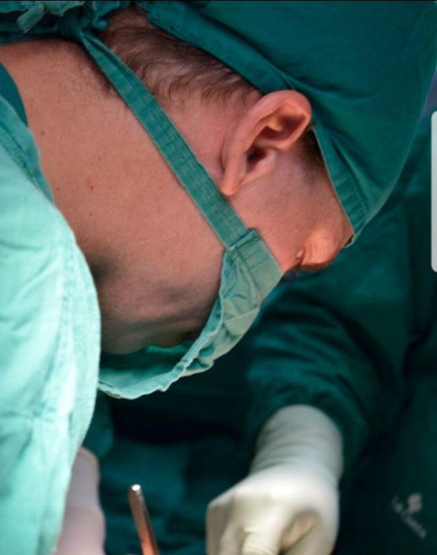

Medicina y desarrollo de soluciones
Médico especialista en ginecología y obstetricia, con formación en cirugía mínimamente invasiva, ecografía ginecológica, patologías del tracto genital inferior y colposcopía.
A lo largo de los años fui desarrollando dos caminos que hoy forman parte de una misma identidad: la práctica profesional en medicina y la creación de herramientas digitales.

Dr. Víctor Oviedo

Dr. Víctor Oviedo
Formación y práctica profesional
Mi actividad principal es la medicina, con enfoque en la atención integral en ginecología y obstetricia, apoyado en formación específica y experiencia práctica.
- Especialista en Ginecología y Obstetricia
- Partos. Cesáreas.
- Cirugías mínimamente invasivas
- Endometriosis
- Postgrado en ecografía general con énfasis en ginecología
- Postgrado en Patologías del Tracto Genital Inferior y Colposcopía
- Cursos, prácticas y pasantías quirúrgicas realizadas en Brasil, México y Alemania
Desarrollo de aplicaciones
Me gusta desarrollar aplicaciones que solucionen mis problemas diarios y luego publicarlas para quienes tengan la misma necesidad.
Mi recorrido en informática comenzó en los años 90 y continúa actualmente con proyectos multiplataforma para Android e iPhone.
El origen de “DEX”
Debido a mis incursiones en la programación y tecnología durante mi formación médica, recibí el apodo de DEXTER.
Desde entonces, muchas de mis aplicaciones incorporan ese nombre: Dextograma, Ovudex, LinkDex.
Equilibrio entre práctica y vida personal
Disfruto especialmente de las actividades al aire libre, los campamentos, la pesca y la vida de granja.
Ese vínculo con lo práctico, lo concreto y la naturaleza también influye en cómo pienso mis proyectos: menos complejidad innecesaria, más utilidad real.